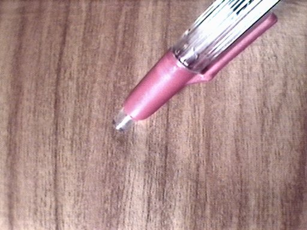
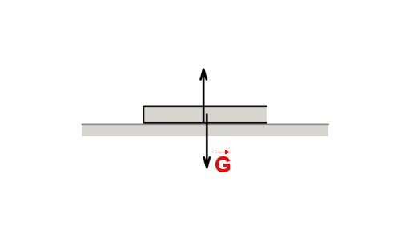
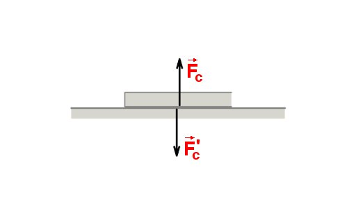
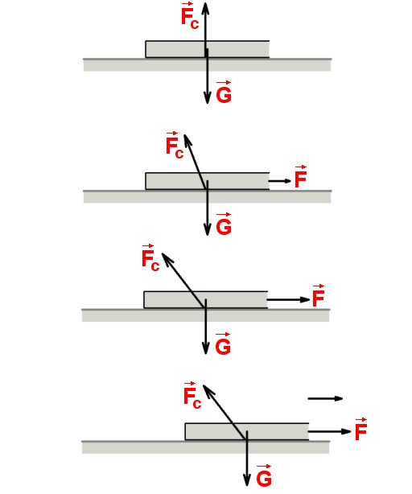
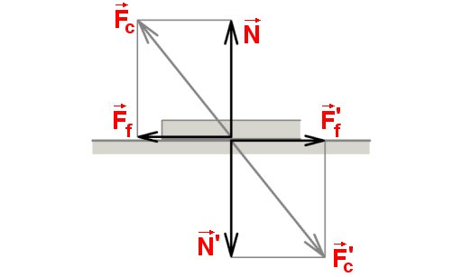
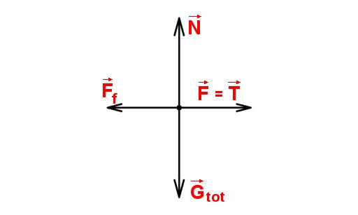
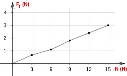
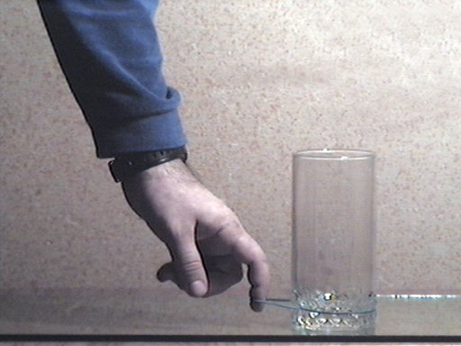

- Fig. 1
- Apăsarea butonului unui pix pe suprafaţa mesei.
|

- Fig. 2
- Forţele care acţionează asupra cărţii.
|

- Fig. 3
- Forţele−pereche ale interacţiunii cărţii cu suprafaţa mesei.
|

- Fig. 4
- Modificarea progresivă a mărimii şi orientării forţei cu care suprafaţa mesei acţionează asupra mapei.
 « Simulare interactivă
« Simulare interactivă
|

- Fig. 5
- Componentele pe direcţii convenabile ale forţei de contact.
|

- Fig. 6
- Diagrama forţelor care acţionează asupra mapei încărcată cu cărţi.
|

- Fig. 7
- Dependenţa mărimii forţei de frecare de mărimea reacţiunii normale.
|

- Fig. 8
- Alunecarea paharului de sticlă pe placa de sticlă.
|